Design a Chat System
WhatsApp / Messenger jaisa chat app: 1-on-1, 100 members tak group chat, online presence, multi-device sync — 50M DAU ke liye. WebSocket, stateful chat servers, KV store aur message IDs ka khel.
Introduction
Chat system real-time messaging deta hai. Is chapter ka chat app ye support karega:
- One-on-one chat
- Group chat (max 100 users)
- Online presence indicator (green dot)
- Multiple devices — ek hi account phone aur laptop pe
- Push notifications
Scale: 50 million DAU, aur chat history hamesha ke liye store. Chat ka core challenge yeh hai ki HTTP request-response model naturally "server se client ko push" nahi karta — aur chat mein server ko hi initiate karna padta hai jab dusre ne message bheja.
Step 1: Requirements
| Item | Scope |
|---|---|
| Chat types | 1-on-1 + group (max 100 members) |
| Message | Sirf text, max 100,000 characters |
| Presence | Online / offline indicator |
| Devices | Multiple devices per account |
| Notifications | Push notifications |
| Scale | 50M DAU |
| Storage | Permanent chat history |
Quick math: 50M DAU — agar har user roz ~40 messages bheje (assumption), to ~2 billion messages/day ≈ ~23k messages/sec average. Har message ~100 bytes maan lo to ~200 GB/day naya data — "permanent history" matlab years mein petabyte-scale. Isliye storage choice (KV store) critical hai.
Step 2: High-level design
Basic idea: clients ek dusre se directly baat nahi karte, beech mein chat service hai.
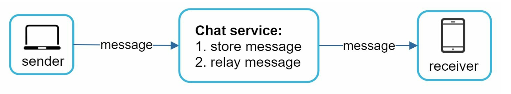
Communication protocols
Sender side: client se server ko message bhejna normal HTTP (keep-alive persistent connection ke saath) se ho sakta hai — client initiate karta hai, koi dikkat nahi. Asli problem receiver side hai: server client ko kaise bataye ki naya message aaya? Teen options:
1. Polling
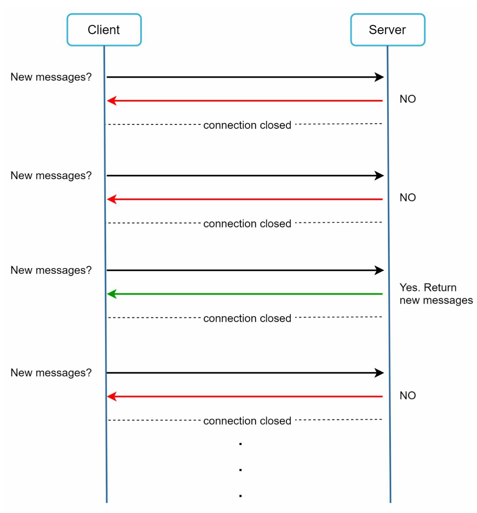
2. Long polling
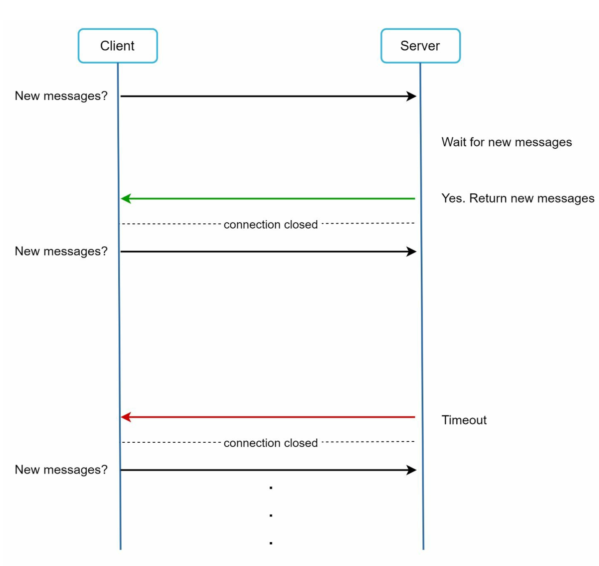
Long polling ki dikkatein:
- Sender aur receiver alag chat servers pe connected ho sakte hain — HTTP servers stateless hote hain aur load balancer round robin karta hai, to jis server ko message mila, us server se receiver ka long-poll connection nahi bhi ho sakta.
- Server ke paas achha tareeka nahi ki client disconnect hua ya nahi.
- Inactive users bhi timeout ke baad baar-baar connect karte rehte hain — waste.
3. WebSocket (chosen)
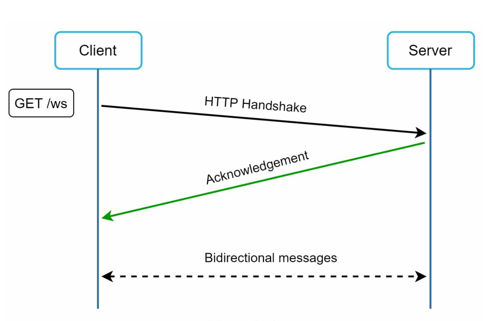
GET /ws se HTTP handshake karta hai → server green Acknowledgement bhejta hai (protocol upgrade) → uske baad dashed double-headed arrow: Bidirectional messages — ek hi persistent connection pe dono taraf se kabhi bhi data.WebSocket HTTP connection se shuru hota hai aur "upgrade" hoke persistent bidirectional connection ban jaata hai. Ports 80/443 use karta hai, isliye firewalls se aam taur pe nikal jaata hai. Sending aur receiving dono ke liye WebSocket use karte hain — design simple ho jaata hai.
| Technique | Latency | Server cost | Verdict |
|---|---|---|---|
| Polling | Interval jitni | Bahut zyada wasted requests | ❌ |
| Long polling | Achhi | Hanging connections + reconnect churn | Fallback |
| WebSocket | Lowest | Persistent connection memory (stateful) | ✅ |
High-level components
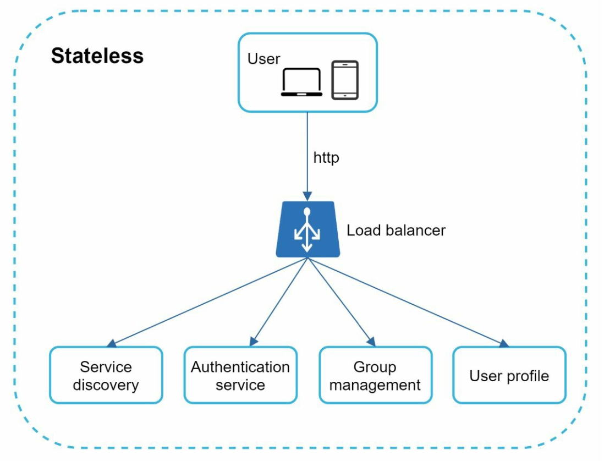
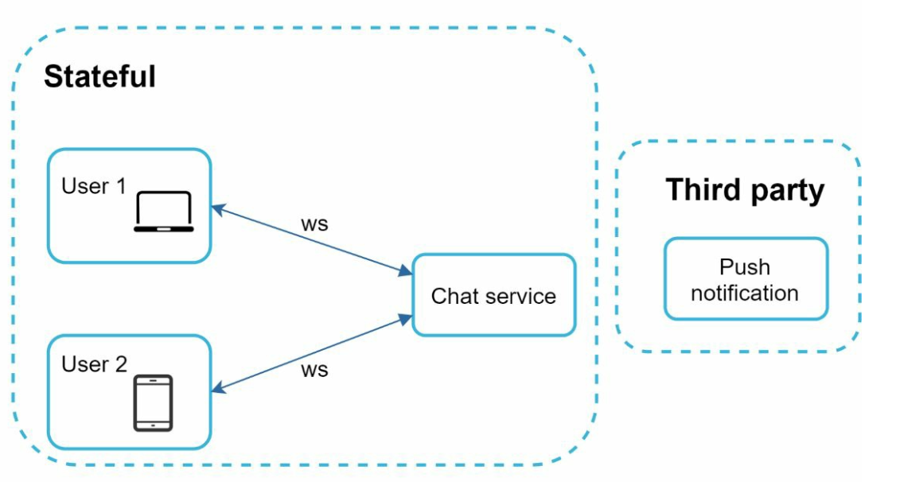
- Stateless services: signup, login, profile, group management. Service discovery bhi yahi hai — client ko batata hai kaunse chat server se connect karo.
- Stateful service: chat service — persistent WebSocket connections, message delivery.
- Third-party: push notifications (Chapter 10 ka system).
Overall design
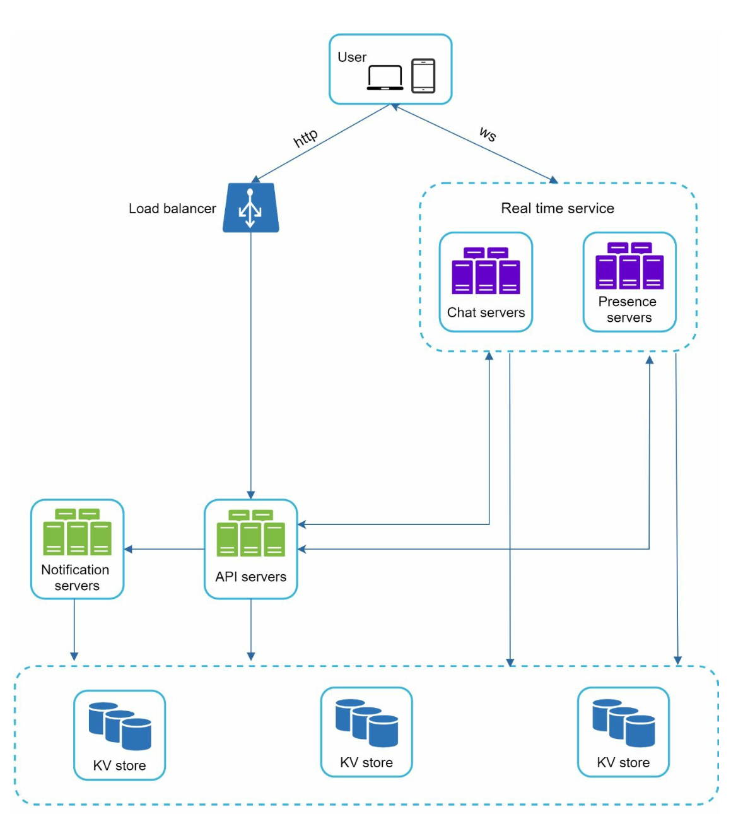
- Chat servers: message send/receive.
- Presence servers: online/offline status.
- API servers: login, signup, profile change — baaki sab.
- Notification servers: push notifications.
- KV store: chat history.
Storage: KV store kyun?
Do tarah ka data hai: generic data (user profile, settings, friends list) — ye relational DB mein theek hai (replication + sharding ke saath). Aur chat history — iska pattern alag hai: data bahut zyada, recent chats zyada padhe jaate hain, lekin search/jump-to-message jaise random access bhi chahiye. Isliye key-value store:
- Easy horizontal scaling.
- Very low latency access.
- Relational DB "long tail" data achhe se handle nahi karta — index bahut bada ho jaata hai to random access mehenga.
- Proven: Facebook Messenger (HBase) aur Discord (Cassandra) jaise apps KV/wide-column stores use karte hain.
(channel_id, message_id) wala idea jo neeche hai. Baad mein unhone ScyllaDB pe migrate bhi kiya.Data models
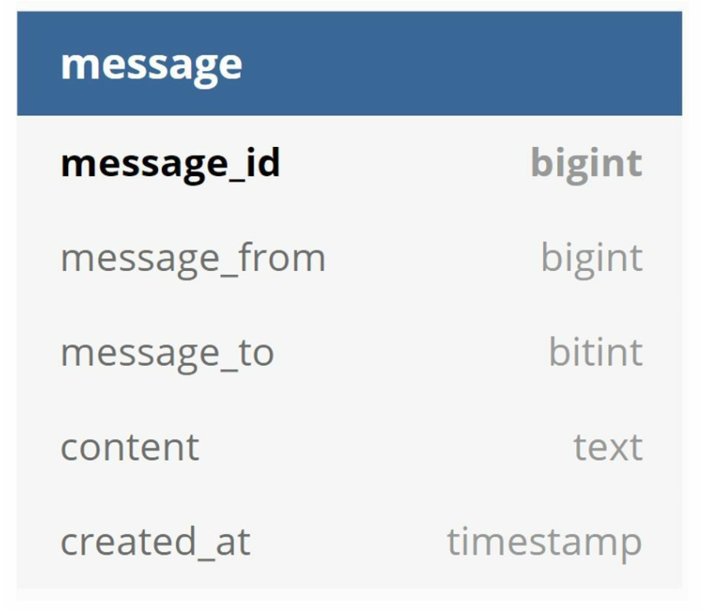
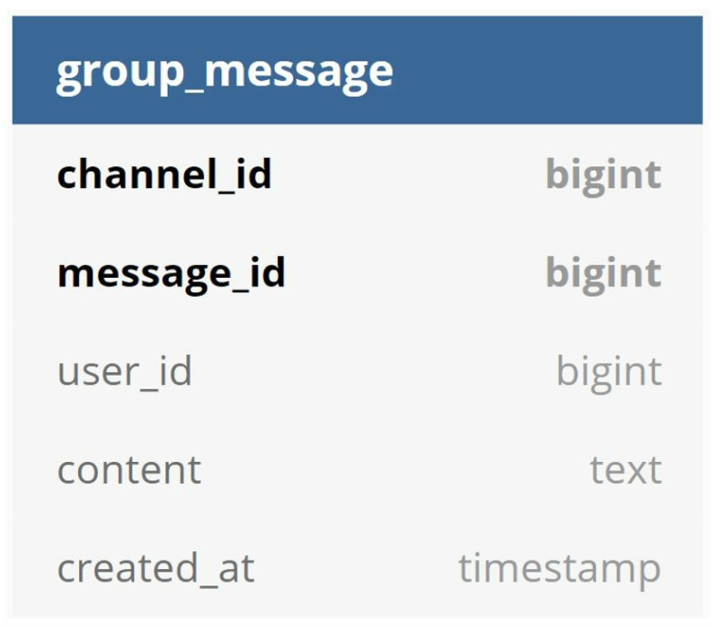
Message ID kaise generate karein?
Requirements: ID unique ho aur time ke saath sortable ho (naya message = bada ID). created_at pe sort kyun nahi? Do messages same millisecond mein aa sakte hain.
- MySQL auto_increment — NoSQL mein generally nahi milta.
- Global 64-bit sequence generator jaise Snowflake (Chapter 07).
- Local sequence number generator (better): ID sirf ek channel/group ke andar unique. Kaam isliye karta hai kyunki ordering sirf ek 1-on-1 channel ya group ke andar chahiye, globally nahi. Implement karna global generator se aasaan.
Step 3: Design deep dive
Service discovery
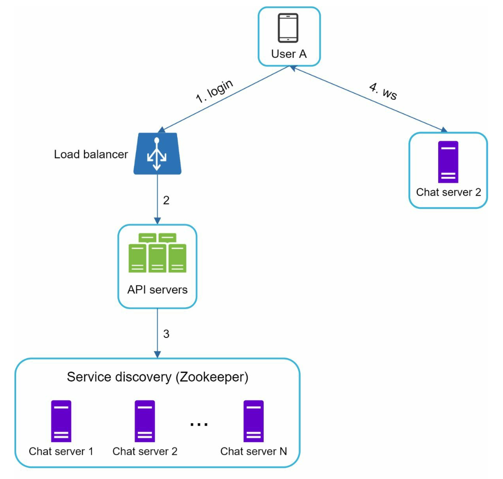
Service discovery ka kaam: client ke liye best chat server recommend karna — criteria jaise geographical location aur server capacity. Apache Zookeeper popular open-source solution hai: saare available chat servers usme register hote hain aur wo pre-defined criteria pe best server choose karta hai.
cur_max_message_id se missed messages sync karenge.1-on-1 chat flow
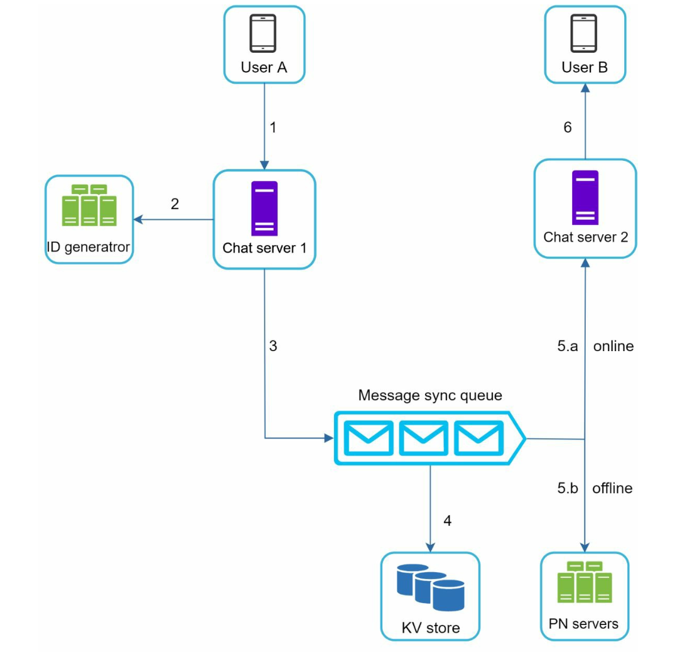
- User A Chat server 1 ko message bhejta hai.
- Chat server 1 ID generator se message ID leta hai.
- Message sync queue mein bhejta hai.
- Message KV store mein save hota hai.
- B online → Chat server 2 ko forward; B offline → push notification.
- Chat server 2 B ko WebSocket pe deliver karta hai.
Multi-device message synchronization
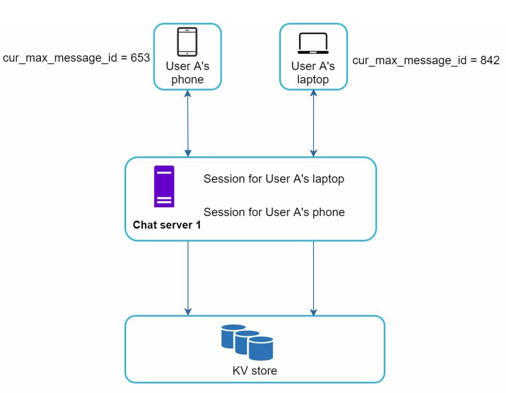
cur_max_message_id = 653) aur laptop (cur_max_message_id = 842). Dono Chat server 1 se connected hain — server pe dono ke alag sessions hain. Dono devices KV store se apne-apne cur_max_message_id se bade messages fetch karte hain. Phone peeche hai (653), to wo 654 se 842+ tak ke messages layega.Har device ek variable rakhta hai cur_max_message_id — device pe latest message ka ID. Naya message wo hai jo:
- Recipient ID = currently logged-in user ID, aur
- KV store mein message ID >
cur_max_message_id.
Har device ka alag cur_max_message_id hone se sync independent hai, aur KV store se "ID > X" range query fast hai.
Small group chat flow
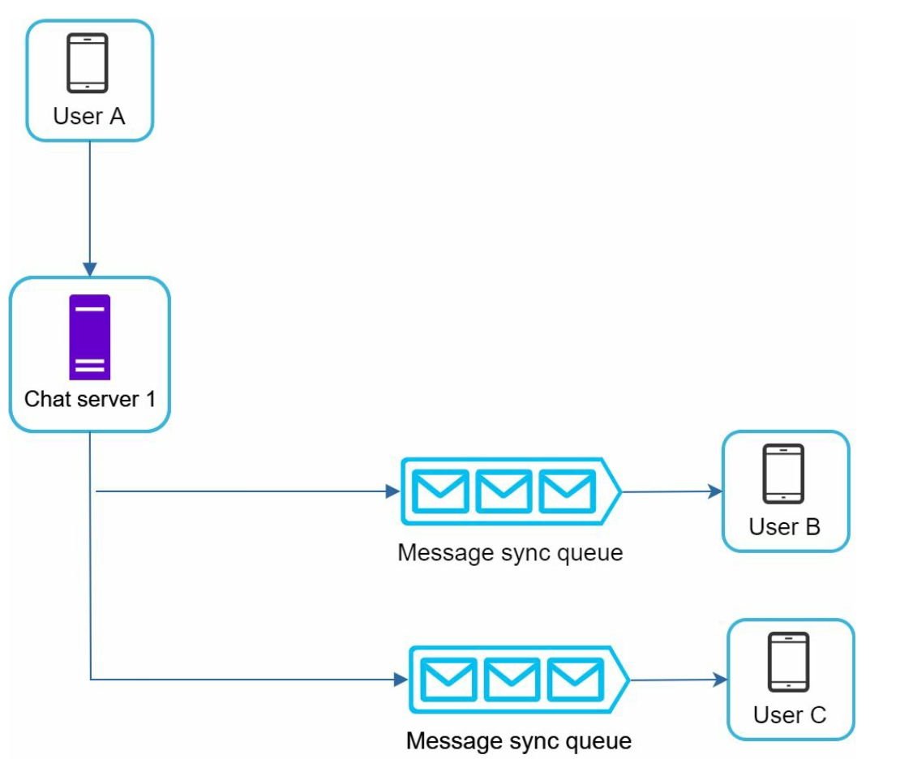
- Message har recipient ke inbox (message sync queue) mein copy hota hai.
- Fayda: sync simple — har client sirf apna inbox dekhta hai, ek jagah se sab naye messages.
- Nuksan: group bada ho to har message N copies — isliye 100 members cap pe ye theek hai, 1 lakh pe nahi.
- Recipient side: ek inbox mein multiple senders/groups ke messages aate hain.
Online presence
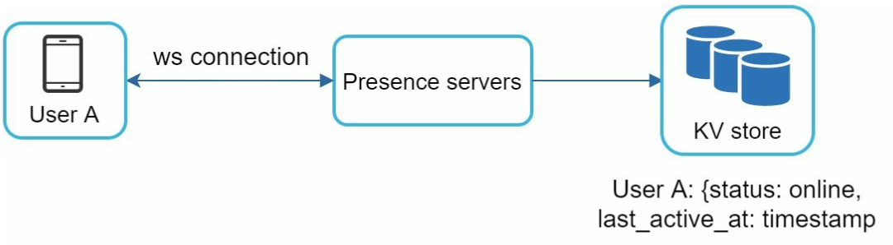
User A: {status: online, last_active_at: timestamp}. Login pe online set, logout pe offline.Login: WebSocket banne ke baad status online + last_active_at KV store mein. Logout: status offline. Lekin disconnection tricky hai — mobile network baar-baar jaata-aata hai (tunnel, lift). Har disconnect pe offline/online toggle karoge to friends ka indicator flicker karega aur presence events ka storm aayega.
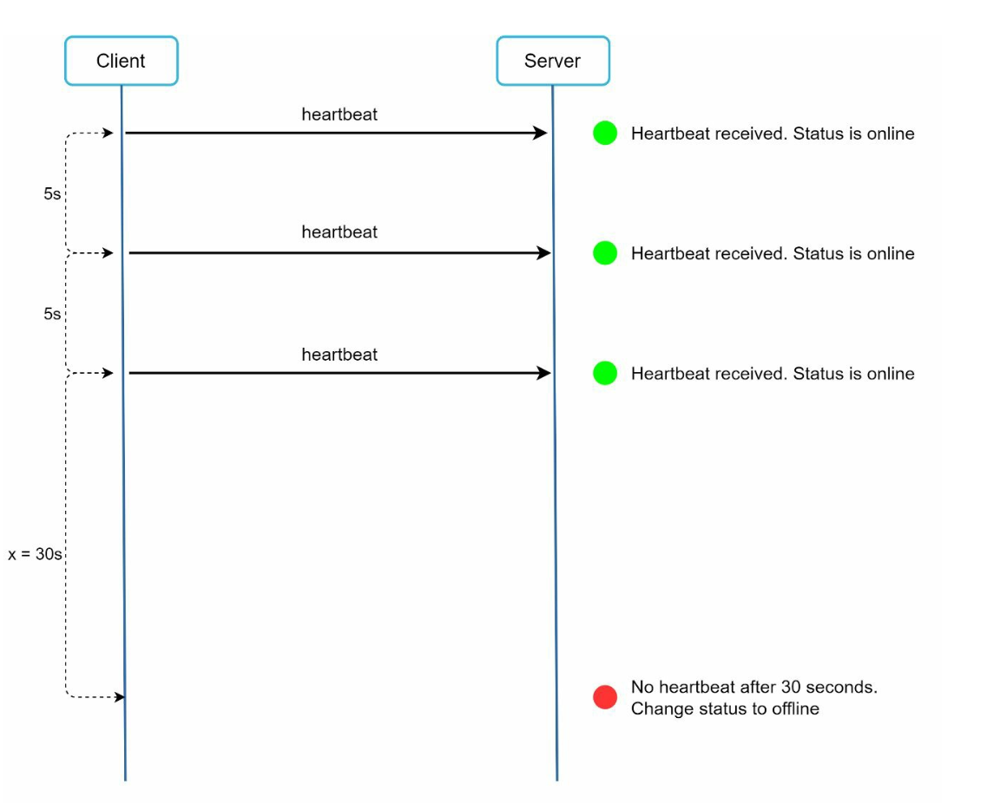
Heartbeat fix hai: online client periodically heartbeat bhejta hai; agar x seconds (yahan 30s) tak kuch nahi aaya, tab offline mark karo. Chhote network glitches absorb ho jaate hain.
Presence fanout
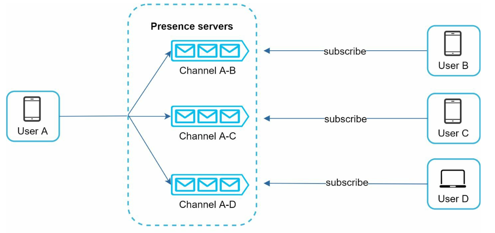
- Har friend pair ka ek pub-sub channel. A ka status change → A-B, A-C, A-D channels mein publish.
- Ye small groups ke liye effective hai. 100,000 member group mein ek status change = 100k events — tab presence sirf group open karne pe ya manual refresh pe fetch karo.
Step 4: Wrap-up aur extensions
- Scalability: horizontal scaling, load balancing, caching. Note: 1M concurrent connections ~10KB per connection ≈ 10GB memory — technically ek server pe fit ho sakta hai, lekin SPOF hai, isliye multiple chat servers.
- Error handling: chat server fail → service discovery naya server deta hai; message resend ke liye retry + queueing.
- Media support: photos/videos — compression, cloud storage, thumbnails.
- End-to-end encryption: sirf sender aur recipient padh sakein.
- Client-side caching: data transfer kam.
- Load time: geographically distributed caching (Slack jaise apps ne aisa network banaya hai).
Interview mein kaise bolein
- (5 min) Scope: 1-on-1 + group (≤100), text ≤100k chars, presence, multi-device, push, 50M DAU, permanent storage.
- (8 min) Protocol choice: polling → long polling → WebSocket, har ek ki kami batake.
- (10 min) Stateless vs stateful split, high-level diagram, KV store justification, data models + local message IDs.
- (15 min) Deep dive: service discovery (Zookeeper), 1-on-1 flow (online vs offline), multi-device sync via cur_max_message_id, group inbox model, presence heartbeat + pub-sub fanout.
- (5 min) Failures + extensions: server crash/reconnect, E2E encryption, media.
Common follow-up questions
Q: Message delivery guarantee kya hai?
A: Message pehle KV store mein persist, phir deliver. Client ack na kare to retry; dedup ke liye client-generated message id/ID check. Effectively at-least-once + idempotent display.
Q: Messages out-of-order kyun nahi honge?
A: Per-channel monotonically increasing message_id; client ID ke hisaab se sort/display karta hai.
Q: User A aur B alag chat servers pe hain — routing kaise?
A: Message sync queue / pub-sub ke through; har chat server ko pata hota hai uske paas kaunse users connected hain, aur queue us server tak message pahunchati hai.
Q: Chat server deploy karna hai, connections ka kya?
A: Graceful drain — naye connections band, purane clients ko reconnect hint, clients service discovery se dusra server lekar resync.
Q: Read receipts / typing indicator?
A: Ye ephemeral events hain — WebSocket pe bhejo, typing indicator store mat karo; read receipt ko last_read_message_id ki tarah store kar sakte ho.
Q: Presence flicker kaise rokein?
A: Heartbeat with timeout (30s); network blip pe turant offline mat karo.
Key Takeaways
- Receiver side ke liye WebSocket best — bidirectional, persistent, low latency; cost = stateful servers.
- Stateless (auth, profile, groups, service discovery) aur stateful (chat servers) ko alag rakho.
- Chat history ke liye KV store: horizontal scale, low latency, long-tail data friendly (Messenger, Discord).
- Message ID unique + sortable; local (per-channel) sequence kaafi hai.
- Zookeeper service discovery best chat server assign karta hai.
- Multi-device sync = per-device cur_max_message_id; small groups = per-recipient inbox copy.
- Presence = heartbeat (5s, 30s timeout) + pub-sub fanout per friend pair; bade groups mein on-demand.